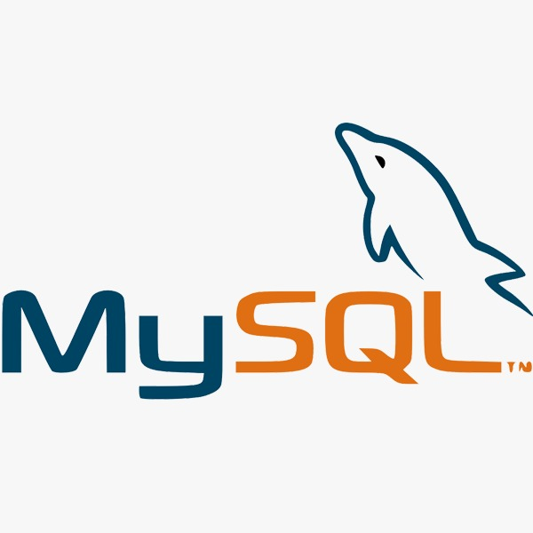
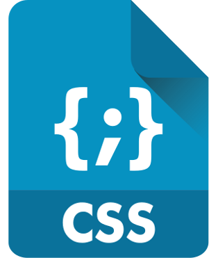

Valeria Salis
Trasformo il caffè in codice.
In breve, sono Sviluppatore Web.
Ho sempre mostrato grande interesse per la tecnologia.
A 4-5 anni smanettavo con i computer portatili giocattolo ma l’emozione non era nulla a confronto di quando ho visto per la prima volta un computer fisso insieme alla miriade di cavi che lo collegavano al case, alla tastiera, alla corrente e poi al Router (anch’esso caratterizzato da una miriade di cavi ma anche lucine varie).
Con sgomento di coloro che già mi dipingevano allo Scientifico ho proseguito seguendo le orme dell’informatica iscrivendomi alle superiori all’indirizzo SIA - Sistemi Informativi Aziendali (ex indirizzo “Programmatori”). Proseguo quindi sviluppando un’indole ibrida: passione per la tecnologia ma anche per la musica e per la matematica di base associata all’economia aziendale.
Tra un bilancio e l’altro, uno schema relazionale e una pagina web statica in HTML concludo il mio percorso con il massimo dei voti e volo direttamente verso Milano per cominciare l’avventura universitaria presso l’Università degli Studi di Milano, facoltà di Informatica Musicale.
Secondo anno: corso di Programmazione Web.
Ho un bel dejà-vù tra HTML, CSS, MySQL, PhpMyAdmin, JavaScript e quant’altro.
Circa a metà 2019 comincia la mia esperienza presso la Mozart S.p.A dove ho la possibilità di prendere le basi imparate precedentemente, renderle concrete e assorbire qualsiasi nozione e metodologia di lavoro affiancando e collaborando con i Senior dell’azienda.
A 4-5 anni smanettavo con i computer portatili giocattolo ma l’emozione non era nulla a confronto di quando ho visto per la prima volta un computer fisso insieme alla miriade di cavi che lo collegavano al case, alla tastiera, alla corrente e poi al Router (anch’esso caratterizzato da una miriade di cavi ma anche lucine varie).
Con sgomento di coloro che già mi dipingevano allo Scientifico ho proseguito seguendo le orme dell’informatica iscrivendomi alle superiori all’indirizzo SIA - Sistemi Informativi Aziendali (ex indirizzo “Programmatori”). Proseguo quindi sviluppando un’indole ibrida: passione per la tecnologia ma anche per la musica e per la matematica di base associata all’economia aziendale.
Tra un bilancio e l’altro, uno schema relazionale e una pagina web statica in HTML concludo il mio percorso con il massimo dei voti e volo direttamente verso Milano per cominciare l’avventura universitaria presso l’Università degli Studi di Milano, facoltà di Informatica Musicale.
Secondo anno: corso di Programmazione Web.
Ho un bel dejà-vù tra HTML, CSS, MySQL, PhpMyAdmin, JavaScript e quant’altro.
Circa a metà 2019 comincia la mia esperienza presso la Mozart S.p.A dove ho la possibilità di prendere le basi imparate precedentemente, renderle concrete e assorbire qualsiasi nozione e metodologia di lavoro affiancando e collaborando con i Senior dell’azienda.
Web
Principali strumenti e linguaggi con cui lavoro


